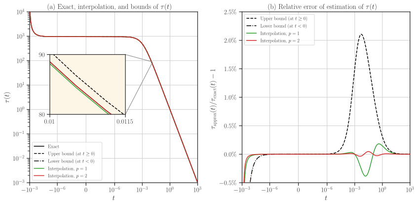

Examples¶
Three examples are provided in /examples, which aim to reproduce the figures presented in [Ameli-2020]. Namely, in that reference,
Example 1: Script
/examples/Plot_TraceInv_FullRank.pyreproduces Figure 2.Example 2: Script
/examples/Plot_TraceInv_IllConditioned.pyreproduces Figure 3.Example 3: Script
/examples/Plot_GeneralizedCorssValidation.pyreproduces Figure 4 and generates the results of Table 2.
- Before running examples:
To run the examples, you may not need to install the
TraceInvpackage. Rather, download the source code and install requirements:# Download git clone https://github.com/ameli/TraceInv.git # Install prerequisite packages cd TraceInv python -m pip install --upgrade -r requirements.txt
Then, run either of the examples as described below.
Example 1¶
The script /examples/Plot_TraceInv_FullRank.py plots the interpolation of the function
using Root Monomial basis Function method. Here, \(\mathbf{I}\) is the identity matrix, \(\mathbf{A}\) is a dense full-rank correlation matrix of the size \(50^2 \times 50^2\), and \(t \in [10^{-4},10^3]\).
Run this example by
python examples/Plot_TraceInv_FullRank.py
The script generates the figure below (see Figure 2 of [Ameli-2020]).

The plot on the left shows the interpolation of \(\tau(t)\). Each colored curve is obtained using different number of interpolant points \(p\). The plot on the right represents the relative error of interpolation compared to the accurate computation when no interpolation is applied. Clearly, employing more interpolant points (such as the red curve with \(p = 9\) interpolant points) yield smaller interpolation error.
Example 2¶
The script /examples/Plot_TraceInv_IllConditioned.py plots the interpolation of the function \(\tau(t)\) as defined in Example 1, however, here, the matrix \(\mathbf{A}\) is defined by
where \(\mathbf{X}\) is an ill-conditioned matrix of the size \(1000 \times 500\), and the fixed shift parameter \(s=10^{-3}\) is applied to improve the condition number of the matrix to become invertible.
The interpolation is performed using Rational Polynomial Function method for \(t \in [-10^{-3},10^{3}]\).
Run this example by
python examples/Plot_TraceInv_IllConditioned.py
The script generates the figure below (see also Figure 3 of [Ameli-2020]).
Example 3¶
The script /examples/Plot_GeneralizedCorssValidation.py plots the Generalized Cross-validation function
where \(\mathbf{X}\) is the same matrix as Example 2 and the term involving the trace of inverse in the denominator is interpolated as presented in Example 2.
Run this example by
python examples/Plot_GeneralizedCrossValidation.py
The script generates the figure below and prints the processing times of the computations. See more details in Figure 3 and results of Table 2 of [Ameli-2020].